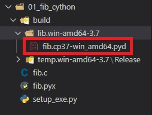

2.Cython编译运行
1、概述
Python 和 C、C++ 之间一个最重要的差异就是 Python 是解释型语言，而 C、C++ 是编译型语言。
而Cython 同 C、C++ 类似，在源代码运行之前也需要一个编译的步骤，不过这个编译可以是隐式的，也可以是显式的。而自动编译 Cython 的一个很棒的特性就是它使用起来和纯 Python 是差不多的，无论是显式还是隐式，都可以将 Python 的一部分（计算密集）使用 Cython 重写，因此 Cython 的编译需求可以达到最小化。因为没有必要将所有的代码都用 Cython 编写，而是将那些需要优化的代码使用 Cython 编写即可。
编译Cython有以下几个选择：
Cython 代码可以在 IPython 解释器中进行编译，并交互式运行。Cython 代码可以在导入的时候自动编译。Cython 代码可以通过类似于 Python 的 disutils 模块的编译工具进行独立编译。Cython代码可以被继承到标准的编译系统，例如：make、CMake、SCons。
这些选择可以让我们在几个特定的场景应用 Cython，从一端的快速交互式探索到另一端的快速构建。
2、Cython编译Pipeline
因为 Cython 是 Python 的超集，所以 Python 解释器无法直接运行 Cython 的代码，那么如何才能将 Cython 代码变成 Python 解释器可以识别的有效代码呢？答案是通过 Cython 编译 Pipeline。
Pipeline 的职责就是将 Cython 代码转换成 Python 解释器可以直接导入并使用的 Python 扩展模块，这个 Pipeline 可以在不受用户干预的情况下自动运行（使 Cython 感觉像 Python 一样），也可以在需要更多控制时由用户显式的运行。
Pipeline 由两步组成：第一步是由 cython 编译器负责将 Cython 转换成经过优化并且依赖当前平台的 C、C++ 代码；第二步是使用标准的 C、C++ 编译器将第一步得到的 C、C++ 代码进行编译并生成标准的扩展模块，并且这个扩展模块是依赖特定的平台的。如果是在 Linux 或者 Mac OS，那么得到的扩展模块的后缀名为 .so，如果是在 Windows 平台，那么得到的扩展模块的后缀名为 .pyd（扩展模块 .pyd 本质上是一个 DLL 文件）。不管是什么平台，最终得到的都会是一个成熟的 Python 扩展模块，它是可以直接被 Python 解释器进行 import 的。
Cython编译器是一种 源到源 的编译器，并且生成的扩展模块也是经过高度优化的，因此 Cython 生成的 C 代码编译得到的扩展模块 比 手写的 C 代码编译得到的扩展模块 运行的要快并不是一件稀奇的事情。因为 Cython 生成的 C 代码是经过高度精炼，所以大部分情况下比手写所使用的算法更优，而且 Cython 生成的 C 代码支持所有的通用 C 编译器，生成的扩展模块同时支持许多不同的 Python 版本。
所以 Cython 和 C 扩展本质上干的事情是一样的，都是将符合 Python/C API 的 C 代码编译成 Python 扩展模块，只不过写 Cython 的话我们不需要直接面对 C，Cython 编译器会自动将 Cython 代码翻译成 C 代码，然后再将其编译成扩展模块。所以两者本质是一样的，只不过 C 比较复杂，而且难编程；但是 Cython 简单，语法本来就和 Python 很相似，所以我们选择编写 Cython，然后让 cython 编译器帮我们把 Cython 代码翻译成 C 的代码。而且重点是，cython 编译器是经过优化的，如果我们能写出很棒的 Cython 代码，那么 cython 编译器在编译之后就会得到同样高质量的 C 代码。
3、安装
3.1 C / C++编译器
3.2 安装cython编译器
安装 cython 编译器的话，可以直接通过 pip install cython 即可。因此我们看到 cython 编译器只是 Python 的一个第三方包，因此运行 Cython 代码同样要借助 Python 解释器。
在终端中输入 cython -V，看看是否会提示 cython 的版本，如果正常显示，那么证明安装成功。
1 | C:\Users\35b180>cython -V |
代码查看：
1 | from Cython import __version__ |
3.3 disutils
Python 有一个标准库 disutils，可以用来构建、打包、分发 Python 工程。而其中一个有用的特性就是它可以借助 C 编译器将 C 源码编译成扩展模块，并且这个模块是自带的、考虑了平台、架构、Python 版本等因素，因此我们在任意地方使用disutils都可以得到扩展模块。
注意：上面 disutils 只是帮我们完成了 Pipeline 的第二步，第一步则是需要 cython 来完成。
以我们之前说的斐波那契数列为栗：
1 | # fib.pyx |
编译文件：
1 | # setup_exe.py |
使用如下命令编译：
1 | python .\setup_exe.py build |
在我们执行命令之后，当前目录会多出一个 build 目录，里面的结构如下。

重点是那个 fib.cp37-win_amd64.pyd 文件，该文件就是根据 fib.pyx 生成的扩展模块，至于其它的可以直接删掉了。把这个文件单独拿出来测试一下：
1 | # test_fib.py |
3.4 引入C源文件
C代码：
1 | // cfib.h |
cython代码：
1 | # fib.pyx |
编译文件：
1 | # setup_exe.py |
调用测试：
1 | # test.py |
创建扩展模块的方法：
- 单个 pyx 文件：直接通过
cythonize("xxx.pyx")即可 - 如果 pyx 文件还引入了 C 文件, 那么通过
cythonize(Extension(name="xx", sources=["", ""]))的方式即可; name 是编译之后的扩展模块的名字, sources 是你要编译的源文件, 我们这里是一个 pyx 文件一个 C 文件;
4、通过IPython动态交互Cython
使用 distutils 编译 Cython 代码可以控制每一步的执行过程，当时也意味着在使用之前必须要先经过独立的编译，不涉及到交互式。而 Python 的一大特性就是交互式，比如 IPython，所以需要想个法子让 Cython 也支持交互式，而实现的办法就是使用魔法命令。
打开IPython，演示：
1 | PS E:\> IPython |
首先 IPython 中存在一些魔法命令，这些命令以一个或两个百分号开头，它们提供了普通 Python 解释器所不能提供的功能。%load_ext cython会加载 cython 的一些魔法函数，如果执行成功将不会有任何的输出。然后重点来了，%%cython允许我们在 IPython 解释器中直接编写 Cython 代码，当我们按下两次回车时，显然这个代码块就结束了。但是里面的 Cython 代码会被 copy 到名字唯一的 .pyx 文件中，并将其编译成扩展模块，编译成功之后 IPython 会再将该模块内的所有内容导入到当前的环境中，以便我们使用。
因此上述的编译过程、编译完成之后的导入过程，都是在按下两次回车键之后自动发生的。但是不管怎么样，它都涉及到编译成扩展模块的过程，包括后面要说的即时编译，只不过这一步不需要你手动做了。
当然相比 IPython，我们更常用 jupyter notbook，既然 Cython 在前者中可以使用，那么后者肯定也是可以的。
jupyter notebook 底层也是使用了 IPython，所以它的原理和 IPython 是等价的，会先将代码块 copy 到名字唯一的 .pyx 文件中，然后进行编译。编译完毕之后再将里面的内容导入进来，而第二次编译的时候由于单元格里面的内容没有变化，所以不再进行编译了。
另外在编译的时候如果指定了 --annotate选项，那么还可以看到对应的代码分析。
5、使用pximport即时编译
因为 Cython 是以 Python 为中心的，所以希望 Python 解释器在导包的时候能够自动识别 Cython 文件，导入 Cython 就像导入常规、动态的 Python 文件一样。但是不好意思，Python 在导包的时候并不会自动识别以 .pyx 结尾的文件，但是可以通过 pyximport来改变这一点。
1 | # fib.pyx |
正如我们上面演示的那样，使用 pyximport可以让我们省去 cythonize 和 distutils 这两个步骤（注意：这两个步骤还是存在的，只是不用我们做了）。另外， Cython 源文件不会立刻编译，只有当被导入的时候才会编译，并且即便后续 Cython 源文件被修改了，pyximport 也会自动检测，当重新导入的时候也会再度重新编译，机制就和 Python 的 pyc 文件是一个道理。
自动编译之后的 pyd 文件位于 ~/.pyxbld/lib.xxx 中
但是问题来了，如果包含 Cython 文件中还引入了其它的 C 文件该怎么办呢？直接导入会报错
6、控制pyximport并管理依赖
手动编译的时候，可以直接指定依赖的 C 文件的位置，但是直接导入 .pyx 文件的时候是并不知道这些依赖在哪里的。所以应该还要定义一个 .pyxbld 文件，.pyxbld 文件要和 .pyx 文件具有相同的基名，比如为了指定 fib.pyx 文件的依赖，那么 .pyxbld 文件就应该叫做 fib.pyxbld，并且它们要位于同一目录中。
1 | # fib.pyxbld |
此时再来直接导入看看，会不会得到正确的结果。
1 | # 全局编码为 utf-8 |
.pyxbld 文件中除了通过定义 make_ext 函数的方式外，还可以定义 make_setup_args函数。对于 make_ext 函数，在编译的时候会自动传递两个参数：modname、pyxfilename。但如果定义的是 make_setup_args 函数，那么在编译时就不会传递任何参数，一些都由你自己决定。
但这里还有一个问题，首先 Cython 源文件一旦改变了，那么再导入的时候就会重新编译；但如果 Cython 源文件（.pyx）依赖的 C 文件改变了呢？这个时候导入的话还会自动重新编译吗？答案是会的（没想到吧），cython 编译器不仅会检测 Cython 文件的变化，还会检测它依赖的 C 文件的变化。